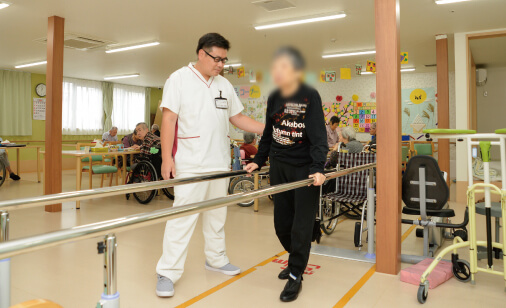

グループホーム、デイサービス、訪問介護、訪問看護——。群馬の5つのエリアで、ご利用者様の「その方らしい毎日」を支える仲間を探しています。資格がなくても、ブランクがあっても大丈夫です。
実際に働くスタッフの言葉が、いちばんの求人票だと思っています。（御社採用サイトのインタビューより）
職種×エリア×勤務時間で探せる求人ページへ。※各職種は御社採用サイトの求人リストへ接続します
認知症高齢者の暮らしに寄り添う少人数ケア。未経験・無資格OK。
日帰りの機能訓練とレクリエーション。日勤中心で家庭と両立。
ご自宅での生活援助・身体介護。直行直帰の働き方も相談可。
医療面からご利用者様をサポート。ブランク歓迎。
ご利用者様とご家族の人生に伴走するケアプラン作成。
74施設を支える本部業務。広報・PRは外部パートナーと分担できます。
芍薬が咲いた。夏祭りをやった。新しい施設がオープンした——。発信のネタは現場に無限にあります。足りないのは、それを拾って形にする「手」だけ。
週1回の定期発信×月1本の動画で、応募者にもご家族にも「中の様子が見える」会社にします。

| 社名 | ケアサプライシステムズ株式会社 |
|---|---|
| 本社 | 〒370-0015 群馬県高崎市島野町890-8 TEL 027-360-5400 |
| 事業内容 | 有料老人ホーム・グループホーム・デイサービス・訪問介護・居宅介護支援・訪問看護・福祉用具の運営（群馬県内74施設） |
| ブランド | わかば／とうわ ほか |
| 展開エリア | 高崎・安中／前橋／伊勢崎／桐生・みどり／藤岡 |
※沿革・施設数などの正確な数値は、御社と相談のうえ確定します。